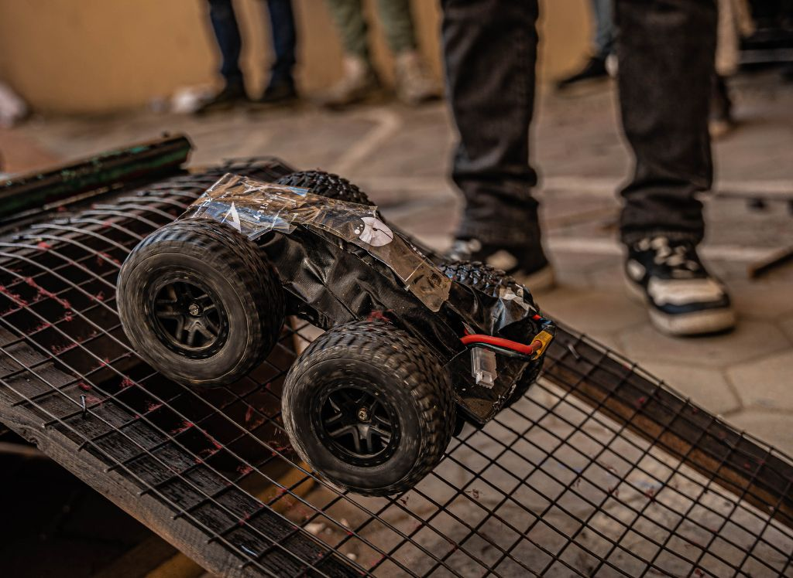

Robo Race
This project showcases a high-speed line-following robot built for racing competitions. The robot is engineered with PID-controlled precision
and custom wheel alignment to handle sharp turns and high-speed straight runs. It features a lightweight frame and powerful motors,
optimized for balance between speed and control.
Technologies Used
- ⚙️ Drive System: Dual Motor (DC/Geared) + H-Bridge
- 🧠Logic: Arduino UNO for PID control
- 👀 Sensors: IR Reflective Sensors Array (5-channel)
- 🪙 Power: Li-ion battery + voltage regulator
- 🚀 Special Feature: Real-time track correction with speed boost zones
GitHub Repository
View on GitHub
Project Report
Gallery

← Back to Projects